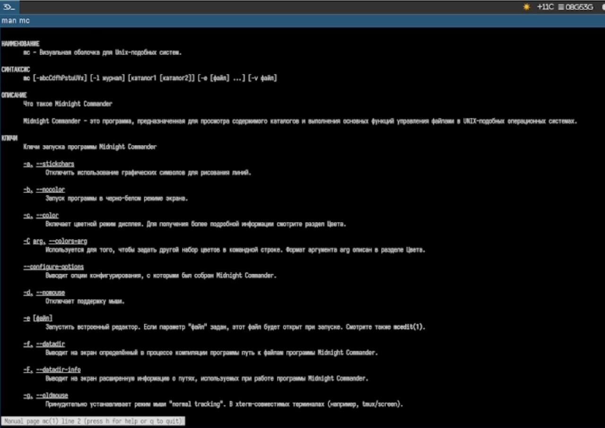
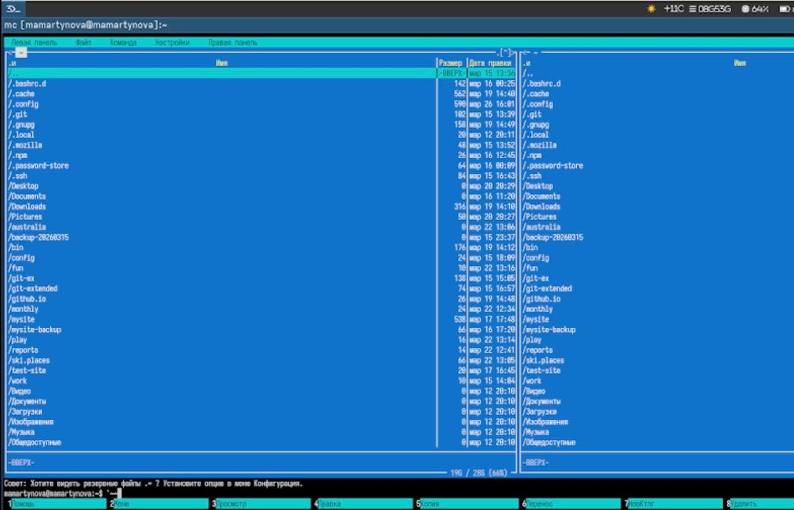
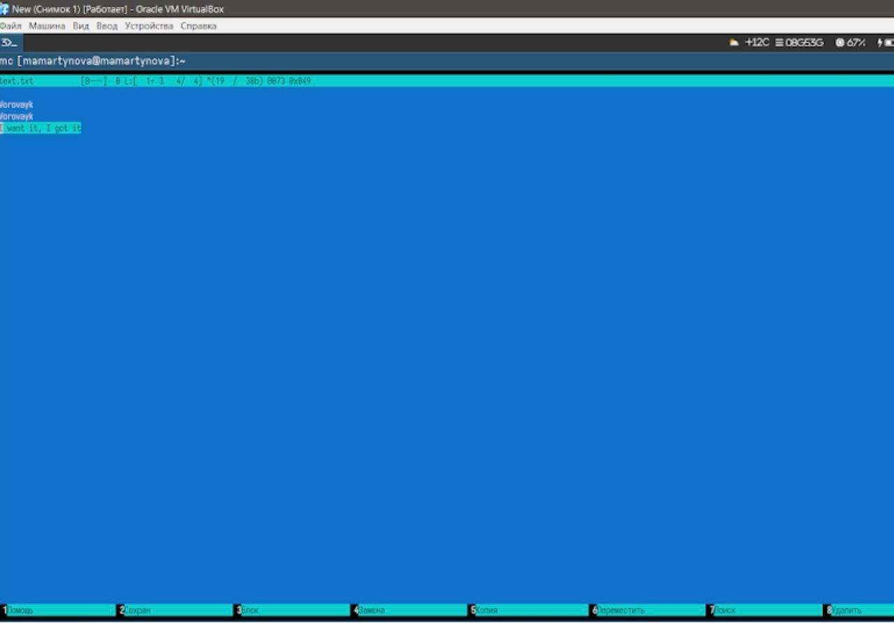
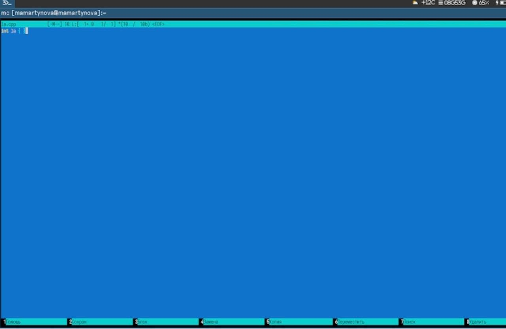

Изучение базового функционала командной оболочки Midnight Commander.
Формирование практических навыков работы с каталогами и файлами, включая
их просмотр и выполнение операций над ними.
2. Задание
Изучите информацию о mc, вызвав в командной строке man mc.
Запустите из командной строки mc, изучите его структуру и меню.
Выполните несколько операций в mc, используя управляющие клавиши
(операции с панелями; выделение/отмена выделения файлов,
копирование/перемещение фай- лов, получение информации о размере и
правах доступа на файлы и/или каталоги и т.п.)
Выполните основные команды меню левой (или правой) панели. Оцените
степень подробности вывода информации о файлах.
Используя возможности подменю Файл , выполните: – просмотр
содержимого текстового файла; – редактирование содержимого текстового
файла (без сохранения результатов редактирования); – создание каталога;
– копирование в файлов в созданный каталог.
С помощью соответствующих средств подменю Команда осуществите: –
поиск в файловой системе файла с заданными условиями (например, файла с
расширением .c или .cpp, содержащего строку main); – выбор и повторение
одной из предыдущих команд; – переход в домашний каталог; – анализ файла
меню и файла расширений.
Вызовите подменю Настройки . Освойте операции, определяющие
структуру экрана mc (Full screen, Double Width, Show Hidden Files и
т.д.)
Создайте текстовой файл text.txt.
Откройте этот файл с помощью встроенного в mc редактора.
Вставьте в открытый файл небольшой фрагмент текста, скопированный из
любого другого файла или Интернета.
Проделайте с текстом следующие манипуляции, используя горячие
клавиши: 4.1. Удалите строку текста. 4.2. Выделите фрагмент текста и
скопируйте его на новую строку. 4.3. Выделите фрагмент текста и
перенесите его на новую строку. 4.4. Сохраните файл. 4.5. Отмените
последнее действие. 4.6. Перейдите в конец файла (нажав комбинацию
клавиш) и напишите некоторый текст. 4.7. Перейдите в начало файла (нажав
комбинацию клавиш) и напишите некоторый текст. 4.8. Сохраните и закройте
файл.
Откройте файл с исходным текстом на некотором языке программирования
(напри- мер C или Java)
Используя меню редактора, включите подсветку синтаксиса, если она не
включена, или выключите, если она включена.
3. Теоретическое введение
Командная оболочка представляет собой интерфейс, через который
пользователь взаимодействует с операционной системой и программами,
вводя команды. Midnight Commander (сокращённо mc) — это
псевдографическая оболочка, работающая в UNIX/Linux. Чтобы запустить mc,
достаточно ввести в командной строке mc и нажать Enter. Рабочая область
Midnight Commander разделена на две панели, которые по умолчанию
показывают содержимое двух разных каталогов.
4. Выполнение лабораторной
работы
Читаю справку. (рис. 1)

Справка
Ознакамливаюсь с интерфейсом mc.(рис. 2)

Интерфейс mc
Изучаю встроенный редактор mc.(рис. 3)

Встроенный редактор mc
Изучаю особенности редактирования кода, подсвечивание
синтаксиса.(рис. 4)

Подсвечивание синтаксиса
5. Выводы
Нами были изучены ключевые функции командной оболочки Midnight
Commander. Мы получили практические умения, необходимые для просмотра
каталогов и файлов, а также для выполнения различных операций над
ними.